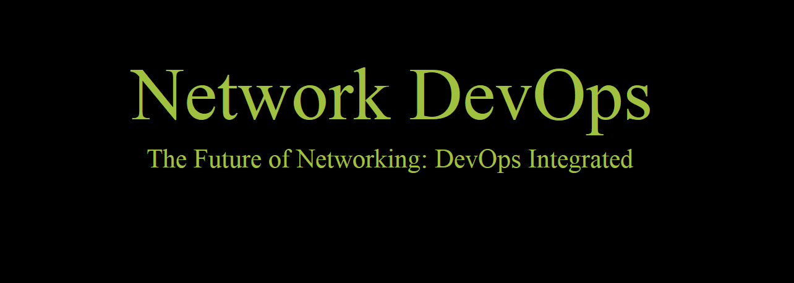

Automating Complex Network Infrastructures
Greetings,
My name's Yasser Ahmed, a highly skilled Network DevOps Engineer with CCNA and CCNP certifications. I specialize in automating and securing complex network infrastructures with a focus on:
Proven expertise in improving network monitoring, implementing robust backup strategies for network devices, and maximizing network efficiency and uptime. My experience has enhanced my skills in effective communication, problem-solving, and time management.
Created a text file containing the initial configuration script to make router configuration faster.
Connected enterprises through service provider with MPLS, VRF, and BGP. Objective: Secure inter-branch communication.
Real-time system resource insights with features like detailed logging and customization.
Code: Check out the code
Awards, recognitions, or publications (to be added)
Include feedback from satisfied clients for social proof (to be added)
Contact me: